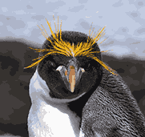
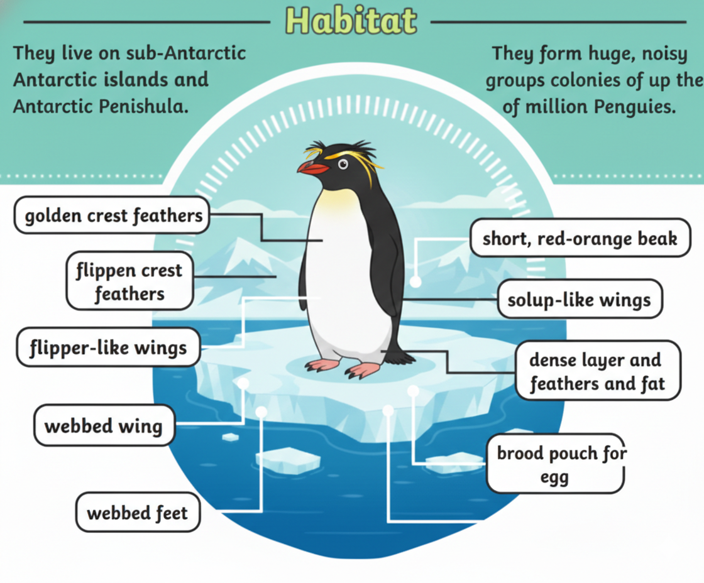
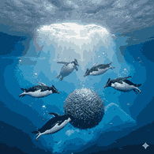

The Penguins with Bright Yellow Crests

Macaroni penguins are easily recognized by their bright yellow-orange crest feathers that extend from their foreheads. They are one of the most numerous penguin species in the world.

Macaroni penguins live on sub-Antarctic islands and Antarctic Peninsula regions. They form very large breeding colonies on rocky coastal areas.

Macaroni penguins mainly eat krill, squid, and small fish. They are strong swimmers and excellent divers while searching for food.